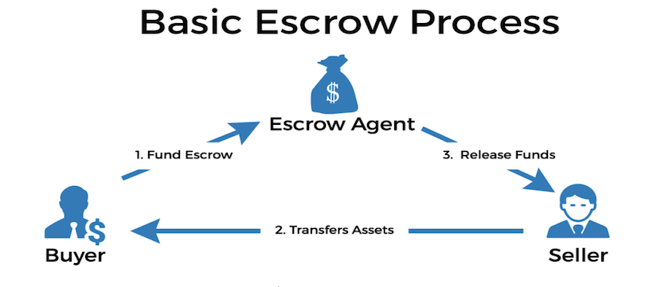

My project idea is a decentralised, trust-less, peer-to-peer escrow service. This will be a website where people can go and trade blockchain assets with one another by using a simple UI and built-in Smart Contracts without having to rely on a human for these transactions. The smart contracts involved will be able to recognise cross-chain assets and allow each party to verify what is being traded before the final exchange of assets take place. To summarise in simple terms, both parties will go to this platform, make their offering to one another before being able to each being able to “sign” and agree to the transaction.
In the Crypto space, people are scammed out of their hard-earned money and profits by heartless and conniving bad actors. The world of Decentralized Finance has exponentially grown from around $440 million TVL (Total Volume Locked) in ‘March to over $100 billion TVL at its peak in December 2021.’ (DeFi Pulse 2022) Along with this influx of money, has come an influx of scammers.
Millions of investors and traders engage in buying and selling cryptocurrencies & NFTs in a somewhat anonymous fashion. In order for an exchange of goods or services to be successful, one must deliver, and one must pay. For this to be guaranteed, an escrow service can be used.
Image Source: https://www.bindcapital.com/img/basic-escrow-process.png
_
Currently, there are existing escrow services, whether that be an exchange, NFT marketplace, or a P2P trading platform. There are also companies that exist to assist hedge funds, companies, or large investors to purchase cryptocurrency assets using fiat without the need of going through an exchange. This is also commonly referred to as an over-the-counter or “OTC” deal. These platforms still rely on a level of trust between parties.
In summary, the motivation for this product comes from being in positions of hesitation to complete a trade due to having to “trust” a stranger on the internet and also being in positions where money has been lost to a bad actor.
The vision for this platform will consist of an easy-to-use user interface where users can go to peer-to-peer trade any cryptocurrency asset for another. This may be, for example, swapping a person 100 BNB for 25 NFTs without having the need to individually list them on a marketplace that may only allow transactions in Ethereum (This could also be expensive with fees occurring for each transaction). Another example could be that a project may want to do an OTC deal with a large investor to help protect the protocol from a huge dump of tokens, potentially causing mass panic and selloff damaging a project.
The service will be built on a series of smart contracts that the funds or assets are sent to and held in until each party agrees on the trade. Users will connect to their Web3 provider (such as Metamask or TrustWallet) in order to transfer these assets. Initially, this platform will only provide services for ERC-20 and ERC-721 tokens as they are ‘the most significant and considered the technical standard’ (Reiff 2017). Most blockchains have been built off Ethereum and are called “EVM’s” or Ethereum Virtual Machines (Ethereum.org n.d.)
Later, the project will be further developed to support other blockchains to be able to create demand for a larger user base.
The project will additionally consist of developing a DEX Aggregator which is a “unified explorer for prices and liquidity offered by decentralised exchanges” (CoinMarketCap 2021) and also a cross-chain bridge. Having a DEX aggregator will alleviate having to build a DEX and gain adoption for other projects to move their liquidity from the current market leaders. Having a cross-chain bridge will allow users to swap their tokens between chains.
Alongside the escrow service, cross-chain bridge and the DEX aggregator, the website will furthermore host its own NFT marketplace where users can list their assets for sale and advertise what trades they are potentially seeking (think Gumtree or Facebook Marketplace but for crypto).
These extra pieces are not to be considered innovative or to “re-invent the wheel” but will be available to stay relevant in the space and provide additional services in order to expand the userbase and create higher demand for the protocol.
In terms of generating revenue, the protocol will either take a fee from each transaction (whether that be a set percentage or flat fee) or potentially house a paid subscription model to use the platform.
Depending on feasibility, laws, and licensing requirements, this project also has further potential to accept Fiat currency for trades and even expand to offering services for payments in crypto.
The tools and technologies needed for this project are no more than any other blockchain project.
For the contracts, these will be needed to be developed in Solidity (programming language) using open source software such as Remix or using the official Solidity Compiler. They will then have to be deployed onto the blockchain.
The project will need a front-end user interface to make things simple for the everyday user, which will be in the form of a website that connects the required actions to the blockchain. There are several ways a website could be developed, whether that is creating it from scratch, or using templates & builders widely available online.
The skills required to build a project like this solely would require the skillsets of a Full Stack Developer. In particular, knowledge of:
There are also other soft skills required such as good time management skills, curiosity for learning, attention to detail, a creative vision, and patience (Vats 2021).
Currently studying a Bachelor of Information & Technology will help to go a long way into developing these skills, and being able to learn solidity will hopefully come as second nature after completing courses in other programming languages.
However, a project like this will more than likely require a team to help build as there is truly a lot of elements that will have to be combined to create a fully operational protocol.
If this project is built up-to-scratch, it could be very successful as it fills a large gap in the current market. This will be a one-stop-shop for users across the globe wanting to transact safely, quickly, and securely.
This project will help circumvent bad actors and scammers throughout the crypto space and provide users a place of comfort and trust.
_